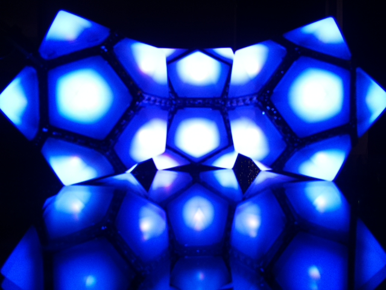

つぶやきProcessing
This animation is a p5.js example sketch borrowed from an article on
つぶやきProcessing by Koma Tebe (You can read about it
here.)
I used it to learn more about p5js, つぶやきProcessing, and web graphics.
In order to embed this p5js sketch in an X tweet, I first reworked it so it would run in
the Processing IDE, exported it as an mp4, then converted mp4 to GIF with ffmpeg, using the
command: ffmpeg -i xxxx.mp4 xxxx.gif. Simple enough.
Note that "createCanvas" and "let" are not keywords in Processing. You need to change
"createCanvas()" to "size()," and "let" to "float" (so that index "i" is declared as a float).
Henon
Luxaeterna

Luxaterna is a light sculpture constructed from WS2822S LEDs embedded in pentagonal PCBs (i.e., BlinkyTiles) and controlled with an Adafruit Metro Mini. Arduino/C++ and FastLED allow cycling through a series of patterns and colors.
Pre-recorded (Full Screen)Livestream (when available)
Inspiration for Luxaeterna was provided by Bunnie Huang's masterpiece Polyhedrone (which I had the pleasure of seeing in Black Rock City in 2017), and Solcrusher (seen at Luminata at Green Lake Park in Seattle several years ago); both much more ambitious projects.